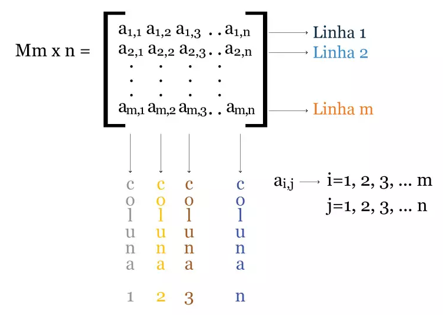
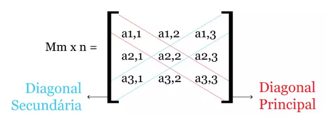

MATRIZES E DETERMINANTES
As operações relacionadas aos cálculos das matrizes e determinantes consistem em números organizados em linhas e colunas, sendo possível a realização das
quatro operações matemáticas. Cada um dos elementos que compõem a matriz é indicado por aij,cujo “i” indica a posição do elemento referente à linha, e “j”,
a posição em relação a coluna das matrizes.
A partir da representação é possível perceber melhor a estrutura m x n de uma matriz, onde são determinados cada um dos seus elementos.
Determinante
O determinante de uma matriz é um número associado a uma matriz quadrada, aquela que possui o mesmo número de linhas e colunas.
O cálculo do determinante de uma matriz qualquer é obtido através dos elementos que constituem essa mesma matriz.
Define-se como determinante da matriz A (det A) o número que é obtido através das operações das matrizes dos elementos que fazem parte da matriz A,
a partir das regras das operações matemáticas das matrizes e determinantes.
Regras básicas das matrizes e determinantes
--> Se uma matriz A qualquer possuir apenas uma linha e uma coluna (A 1 X 1), logo seu determinante será o único elemento integrante dessa matriz.
Observa-se, portanto:
Matriz A = (10)
det A = 10
--> Se uma matriz A qualquer possuir duas linhas e colunas, considerada uma matriz quadrada de ordem 2 (A2 x 2), então o determinante (det A 2 x 2)
dessa matriz será obtido pela diferença entre o resultado da multiplicação diagonal principal da matriz A pelo resultado da multiplicação dos elementos
que compõem a sua diagonal secundária.
Veja abaixo como é feito o cálculo do determinante de uma matriz 2 por 2 (A 2 X 2)
Para toda e qualquer matriz quadrada 2 por 2, também chamada de ordem 2, o cálculo do determinante é feito por meio da demonstração exibida acima,
através da diagonal principal pela secundária.
Mas, em algumas outras regras de matrizes e determinantes, em que há exemplos de matrizes com mais de três colunas e linhas, denominadas
de matrizes de ordem superior, o seu determinante é calculado conforme as orientações indicadas abaixo:
- Primeiramente é necessário realizar o espelhamento da primeira e da segunda coluna da matriz, ou seja, repetir a duas primeiras colunas da matrizes em que o determinante será calculado;
- Fazer a multiplicação de cada diagonal principal e secundária separadamente;
- Posteriormente, somar os resultados obtidos após a multiplicação das matrizes;
- E, por fim, realizar a subtração entre os resultados obtidos equivalente à soma dos termos das diagonais principais e das secundárias. Ao final, o determinante estará definido.
Curiosidades sobre matrizes e determinantes
- Pierre Frédéric Sarrus, no período entre 1798-1861, ficou conhecido pelo método matemático responsável por encontrar os determinantes das matrizes quadradas de ordem 3 (3 x 3),
teoria que ficou conhecida como "Regra de Sarrus".
- O "Teorema de Laplace" é um mecanismo utilizado pelos matemáticos para calcular o determinante de qualquer tipo de matriz quadrada, criado pelo matemático e físico que deu nome
a este método, o francês Pierre Simon Marquis de Laplace, no século XVII e XVIII.
- Serão sempre considerados determinantes nulos aqueles em que a soma dos elementos da sua diagonal seja equivalente a zero.
- Alguns dos tipos de matrizes quadradas: matriz identidade, matriz inversa, matriz singular, matriz simétrica, matriz positiva definida e matriz negativa, matrizes opostas e transpostas.